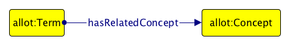

UN Documents
The parliamentary, normative and judicial documents published by the United Nations System of organizations are full of references to real-world objects and concepts (documents, people, organizations, roles, etc.)
As an outcome of the High-Level Committee on Management (HLCM) Working Group on Document Standards, the United Nations has recently started to adopt Akoma Ntoso for providing an electronic representations of all UN Documents and the entities they contain
Akoma Ntoso
Akoma Ntoso introduce a sort of informal ontological structure, according to two kinds of classes:
-
document classes focus on representing the different aspects of a document as intellectual creation, the forms (versions, translations, etc.), its physical embodiment (e.g. PDF, XML, HTML, paper, etc.);
-
non-document classes focus on representing the responsible for the production of the content and what the content is about (e.g. concept, object, event, locations, roles, deliberation steps, etc.).
Informal requirements
Compliance with the Functional Requirements for Bibliographic Records (FRBR) for the document classes
Reuse existing ontologies for the description of documents and the entities they contain
Alignment to foundational ontologies (BFO and DOLCE)
Easily adaptable to the needs of different UN agencies
Diagrams and real examples for introducing ontological terms and their use to domain experts
Extensive documentation so as to introduce the ontology to people with different expertises
Meeting every 7-10 days showing the status of the development
UNDO
The United Nations System Document Ontology (UNDO, https://w3id.org/un/ontology/undo) is an OWL 2 DL ontology that aims at providing a framework for the formal description of all entities and the relations in UN Documents
UNDO follows the FAIR Data Principles:
Findable: w3id.org persistent identifier
Accessible: different formats (via content negotiation)
Interoperable: uses several existing ontologies
Re-usable: available with a CC-BY license
Development: SAMOD
An agile methodology for the development of ontologies by means of small steps of an iterative workflow that focuses on creating well-developed and documented models starting from exemplar domain descriptions – https://github.com/essepuntato/samod
Development: Graffoo
It allows one to present the classes, properties and restrictions within OWL ontologies, or sub-sections of them, as clear and easy-to-understand diagrams http://www.essepuntato.it/graffoo
Development: DiTTO and LODE
Ontologies reused
ALLOT: an OWL 2 DL implementation of the Top Level Classes (TLCs) in Akoma Ntoso, aligned to two important foundational ontologies, BFO and DOLCE, to provide a methodological organization of all the TLCs and their relations
Other: Time-indexed Value in Context, Time Interval, Web Annotation Ontology, DC Terms, FOAF, ISO 639-1, LKIF Core, SKOS, SPAR Ontologies
Versions and mentions
:a-res-50-100-1996-02-02 a undo:Resolution ;
allot:mentions
:a-res-47-180-1992-12-22 ,
:government-of-turkey ,
:habitat-ii .
:a-res-47-180-1992-12-22 a undo:Resolution .
:government-of-turkey a allot:Organization .
:habitat-ii a allot:Event .Relations
# This relation describes the General Assembly recalling the resolution A/RES/47/180.
:relation-1 a undo:Relation ;
undo:hasProponent :general-assembly ;
undo:hasSemantics :recall ;
undo:hasReceiver :a-res-47-180-1992-12-22 .
:a-res-47-180-1992-12-22 a undo:Resolution .
:general-assembly a allot:Organization .
:recall a allot:Concept .Annotations
:annotation-1-a-res-50-100-1996-02-02 a undo:Annotation ;
oa:hasBody :relation-1 ;
oa:hasTarget :a-res-50-100-1996-02-02 .
:a-res-50-100-1996-02-02 a undo:Resolution .Roles and statuses

:giorgio-napolitano a undo:Agent ;
tvc:hasValue :giorgio-napolitano-president-of-italy-2006-2013 .
:giorgio-napolitano-president-of-italy-2006-2013 a undo:ValueInTimeAndContext ;
tvc:withValue :president ;
tvc:atTime :2006-2013 ;
tvc:withinContext :italy .
:2006-2013 a undo:Interval ;
ti:hasIntervalStartDate "2006-05-15T00:00:00"^^xsd:dateTime ;
ti:hasIntervalEndDate "2013-04-22T00:00:00"^^xsd:dateTime .
:president a allot:Role .
:italy a allot:Reference .Terms

:decides a allot:Term ;
undo:hasRelatedConcept :taking-a-decision .
:decide a allot:Term ;
undo:hasRelatedConcept :taking-a-decision .
:taking-a-decision a allot:Concept .Workflows and lifecycles
:publication a undo:Workflow ; pwo:hasStep :step-1 , :step-2 , :step-3 , :step-4 .
:step-1 a undo:Step ; undo:hasStepType :write ; pwo:hasNextStep :step-2 .
:writing-first-draft a undo:Action ;
taskex:executesTask :step-1 ;
part:hasParticipant :assistant-member-rep , :assistant-first-draft-resolution ;
pwo:happened :2017-03-01_05 .
:assistant-member-rep a undo:Agent .
:assistant-first-draft-resolution a undo:DocumentVersion .Question 1
What are all the documents that refer to the UN resolution A/RES/47/180 of 22 December 1992?
SELECT DISTINCT ?document
WHERE {
?document allot:mentions :a-res-47-180-1992-12-22 .
}Question 2
What are the documents that describes the General Assembly recalling the resolution A/RES/47/180 of 22 December 1992?
SELECT DISTINCT ?document
WHERE {
?rel a undo:Relation ;
undo:hasProponent :general-assembly ;
undo:hasSemantics :recall ;
undo:hasReceiver :a-res-47-180-1992-12-22 .
?ann a undo:Annotation ;
oa:hasBody ?rel ;
oa:hasTarget ?document
}Question 3
How many times an agent has been assigned to a specific role?
SELECT DISTINCT ?agent ?role ?context (count(?agent) AS ?count)
WHERE {
?agent a undo:Agent ;
tvc:hasValue ?value .
?value a undo:ValueInTimeAndContext ;
tvc:withValue ?role ;
tvc:withinContext ?context .
?role a allot:Role .
}
GROUP BY ?agent ?role ?contextOther competency questions
What are all the entities referred by the UN resolution A/RES/50/100 of 2 February 1996?
What are all the terms that actually refer to the concept of taking a decision, and in which documents have been used?
What are the current roles of all the agents?
What roles have been held by Sergio Mattarella during his life?
Which roles are involved in particular contexts?
What are all the statuses that have been associated to all the documents?
In which step of all the workflows the first version of a document has been produced?
How many steps (on average) are used in each workflow?
How much did it take to executing each step in each workflow execution?
What was the last entities produced by all the workflow executions?
Documentation
Conclusions
Overview of the United Nations Document Ontology (UNDO), a framework for the description of all the entities mentioned in United Nations documents stored in Akoma Ntoso, and the relations that can exists among them
Put the foundations for making UN documents machine-readable, so as to foster collaboration, to reduce costs in information management across the system, and to allow the creation innovative services